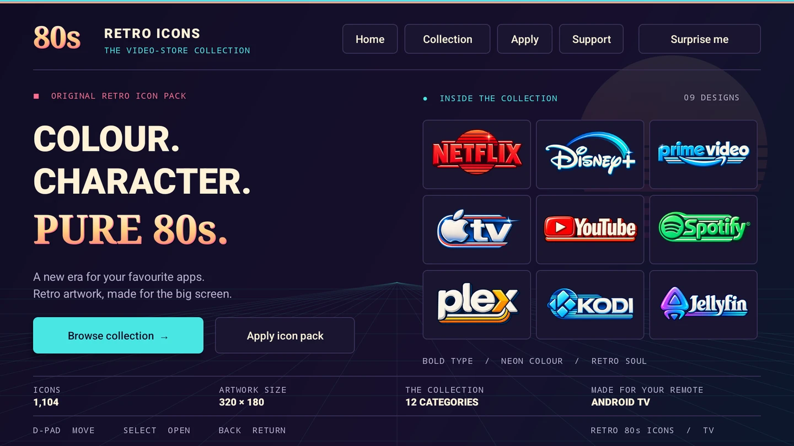

THE ANDROID TV COLLECTION
Your TV.
Another
decade.
Big lettering. Bold colour. A little video-store nostalgia. Give your favourite apps a new look with 1,104 retro icons.
v1.0.0 · 66.3 MB · Android TV 9+
SIDE A / THE ARTWORK
Find your favourites.
Streaming, music, games and everything in between.
Choose a design to take a closer look.
No icons found.
Try another name or explore all the categories.
SIDE B / THE BIG SCREEN
A new look.
One icon pack.
Designed for Android TV and your remote, with search, categories and an easy Projectivy handoff.
- 01
Download & install
Get the APK on your Android TV device. Android TV 9 or newer is required.
- 02
Open Retro 80s Icons
Browse with your D-pad, open a design, or let “Surprise me” pick your next favourite.
- 03
Make it yours in Projectivy
Choose Apply → Apply in Projectivy and confirm. Or select the pack in Settings → Appearance → Cards → Icon pack.

All 1,104 supplied designs are included in the app. You can also download any individual PNG from the collection above.
A FEW USEFUL DETAILS
Before you
press play.
What do I need on my TV?
An Android TV device running Android TV 9 or newer. Projectivy Launcher is used to apply the pack, or to choose an image through its custom icon picker.
Can I choose an icon individually?
Yes. Open the custom icon picker in your launcher and select Retro 80s Icons. You can browse the whole collection and return the selected transparent PNG.
Can I keep Glitch Reflections installed?
Yes. Retro 80s Icons is a separate app, so both packs can stay installed. Select the one you want in Projectivy’s icon-pack settings.
What’s included in the download?
The APK includes 1,104 static retro designs at 320 × 180 pixels, 12 categories, search, previews and remote controls. The individual PNG downloads on this page use the same original artwork.
KEEP THE GOOD STUFF COMING
Like the new look?
If this collection made your TV feel a little more yours, you can support the next one. Thank you.
Support MYKLHARU Support is optional. All icons are included.Scan with your phone
paypal.me/mickyharu